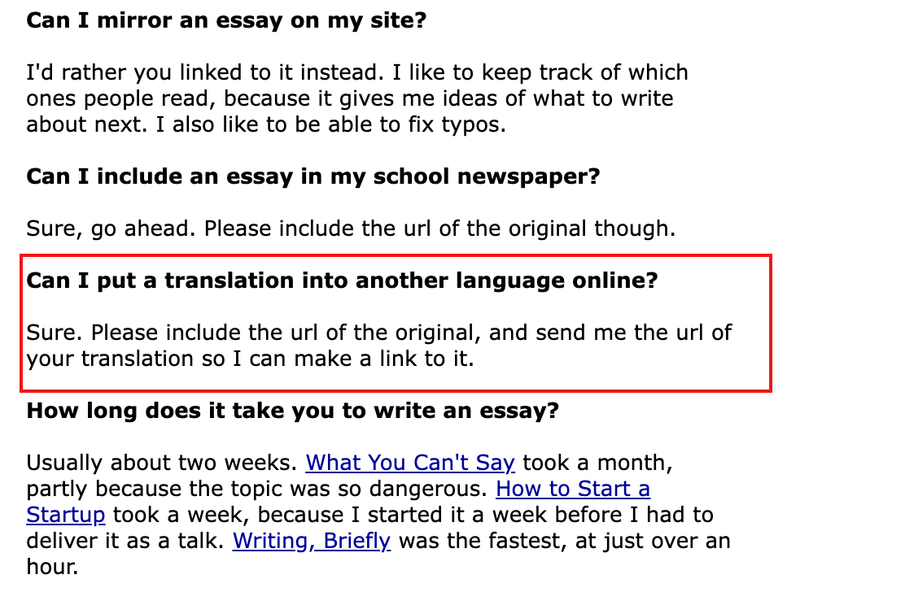

写在前边：我写这篇博客的目的不是为了跳槽，而是为了边写边梳理一下我到底想要什么样的工作环境、我当前的工作状态、今后有哪些规划。
从15年5月开始算的话，到现在我已经工作6年半了，但是从来没有在所谓的大厂工作过。我觉得原因出在我大学度过的一本书上，书名叫《黑客与画家》。
书中的其中一个观点是：「一个非常能干的人待在大公司里可能对他本人是一件很糟糕的事情，因为他的表现被其他不能干的人拖累了」，另一个观点是：「编程语言之间是有优劣之分的，黑客欣赏的语言才是好语言，使用更高级语言的黑客可能比别的程序员更聪明」。（这里的黑客不是大多数人理解的骇客，具体含义可以查阅资料或者阅读本书了解，这里不过多解释）。
因为我大学用 Java 和 Python 都开发过不算小的项目，那个时候的 Java 还没有现在的 Spring 全家桶光环，写起业务来相当的繁杂，所以我毕业找工作时，既没想着去大厂，又不想做 Java 开发。基于以上这些情况，我的前两份工作都是选择的规模不大的创业公司，使用的 Python 语言。之后又在第二家公司 Leader 的推荐下到一家 toB 的公司做了几年 Java 开发。再之后又来到探探做 Golang 开发。
在我看来，我应该还算比较聪明的那类人，有非常好的自驱能力，工程、架构、沟通能力也不错，所以任职过的这几家公司混的都还不错。上家公司巅峰时实线带40+人，后边做了些有业务调整，我离职时实线也有20来人；探探这边目前虚线10来人。
我喜欢追求高效、简洁、优雅的代码风格，这里说题外话：一个我观察到但不一定对的现象，那些把 Leetcode、八股文常挂在嘴边的人，实际开发时编码能力通常好不到哪去。
我喜欢读书，每天会读5本左右不同类型的书，而且阅读非常广泛，不限于技术书，以当前在读的举个例子：晚上睡觉前我会读《红楼梦》、《伯恩斯焦虑自助疗法》，早晚上下班通勤的地铁上读《人类简史》，早上到公司后读《Google SRE 工作手册》。我到公司比较早，9点到9.30之间就到公司了，因为其他同事大多10点半后陆续才来，所以到公司后我会有一个多小时的阅读时间。我这么早来公司也是处于想多读书的目的。中午午休时间还会再读一本技术相关的书，最近读的是《Go 专家编程》。
我会享受学习或完成有挑战事情时的成就感，随着年龄的增长，当我没有取得任何成就时，那种焦虑的感觉就演变成了一种厌恶感。
另外我习惯于早睡早起，晚上睡得再晚早上也会在7点前起床。
（作为一个92年的程序员，是不是生活的有点像老年人？）
基于以上这些原因，我想我在选择工作时会比较看重下边几点：
- 不要内卷，有事做事没事早点下班，晚上下班时间不能晚于8点。
- 下午6点后不要拉会。
- 没有大小周。
- 晚上、周末不要经常性搞聚餐团建之类的（包括团队组织的和个人组织的），一个月不要超过1次。
- 没有酒桌文化，不搞日报、日站会等幺蛾子的事情。
以上只是我个人站在对生活的态度上列出来的几点，其他更通用一些的考量肯定还包括团队氛围、领导风格、业务方向、公司战略、薪资不能低于业界水平等。
目前看来我当前所在的公司以上几条都是满足条件的，据我所知目前市面上绝大多数大厂都无法满足这些点。
不知道没进过大厂算不算是一种遗憾，有时候我甚至会因为没有进过大厂而沮丧和焦虑，觉得自己是个 Loser，如果有符合这些条件的大厂能有幸进去体验一下也是可以的。——但是话又说回来，谁规定进过大厂的人生才是完整的？哪里不是围城呢？
我也想进一家小而美的公司，最好是 B、C 轮之后，和一群聪明的人在一个细分领域去做一些有挑战的事。
大部分人进大厂是因为大厂给的太多了，但我觉得薪资是一个不应该作为决定性决策，我们上班寻求的应该是整个职业生涯利益的最大化，而不仅仅是最近这一份工作利益的最大化，拿上3、5年的高出业界50%的收入也不能解决太多的问题，更何况还搭上了健康和生活乐趣。我说不能解决问题是出于以下考虑：
- 工作的前5-10年，积累技术财富才是更重要的事，而不是为了更多的现金收入。
- 普通程序员很难通过跳槽进入一家大厂来实现财富自由了，大厂所派发的期权和股权暂且不谈价值多少，想拿满就要先卷个三五年。
- 薪资只是工作的附属，工作的真正报酬是成长。
很多人想进大厂的另一个目的是「镀金」，但是所谓的镀金不也是为了未来能进另一个大厂么，但你现在已经到了大厂，为了镀金开始忍耐着在一群人中卷起来，之后跳到另一家继续卷，还是走不出那个圈子。想要走出这个圈子还是要改变自己的想法，用智慧而不是蛮力去解决问题。
如果你所在的大厂没有内卷，比如 Apple、AWS 这种外企大厂，就另当别论了。
当然，我的以上观点可能纯属吃不着葡萄说葡萄酸，没有进过大厂也却是有我自己的原因，因为我从小就讨厌应试教育，在我看来现在的面试也接近应试教育：「面试官清楚自己在问八股文，你也清楚自己在背八股文，你们心照不宣的完成了面试。」我从最开始工作到现在，在面试前没有刷过题（我看面试题的唯一的目的就是用在面试别人上），没有做过刻意的准备，都是看缘分，人家看得上我我就去，看不上就是缘分没到，所以可能也是因为这个原因，通常我在入职后的表现都会超出一些预期，具体表现有这几个：
- 我毕业时去的第一家公司，第二个月就给我加了薪；
- 在上家公司每年的绩效都是 A 或 S；
- 在探探今年上半年也拿到了 S 绩效。
最后，理想和追求的多样化，才是避免内卷的终极方法。
P.S.
《黑客与画家》这本的作者叫保罗·格雷厄姆（Paul Graham），是著名创业投资公司 Y Combinator 的创始人，之前开发的 Viaweb 卖给了雅虎，Lisp 传道士。最近我看到了他的博客：http://paulgraham.com/articles.html，里边文章内容质量很高、见解独特，所以我建了一个中文站：https://paulgraham-cn.com/ 来做搬运，作者也在 FAQ 中提到允许翻译成其他语言，只要带上他的原文链接就可以了（见下图）。我会不定期的翻译一篇作者的文章到这个中文站中。
